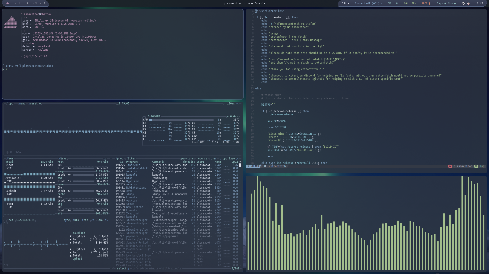
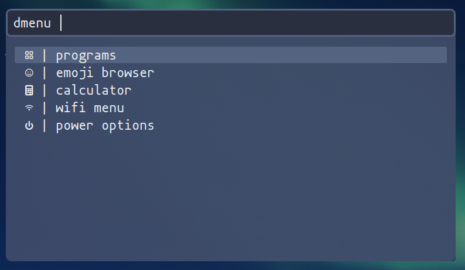

winter 2024 rice
take me back!!my dotfiles are NOT public!! do not ask for them, for i will not give them to you!
pure desktop
![[w2024r pure desktop]](w2024r-desktop.png)
multiple terminals open
rofi
all of the listed menus in the image are functional!
wm: hyprland
bar: waybar
menu: rofi
terminal: konsole
shell: nushell (with starship.rs)
fetch: cottonfetch